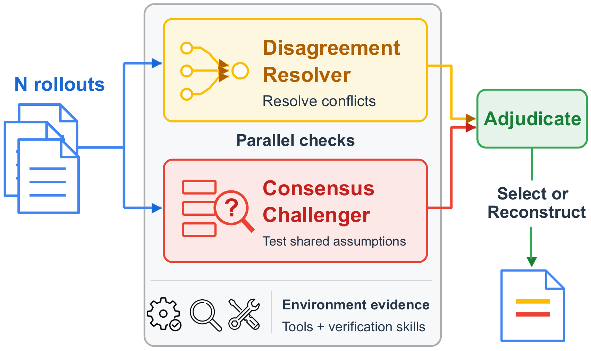
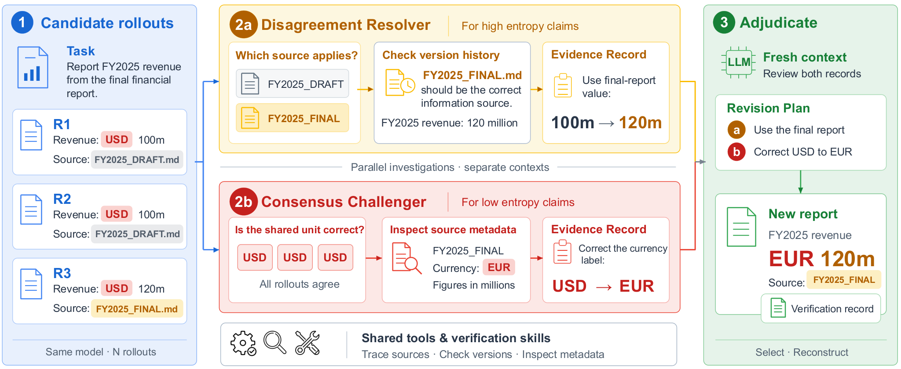

多数投票选出的答案，可能是错的；所有rollout一致的答案，也可能是错的。在Claude Opus 4.8的十rollout池子里，34%的一致取值被判错误，分歧claim里74%含有正确候选。长时agent的交付物越做越复杂，验证正在成为与生成并列的核心挑战。
VeriHarness给出一种不依赖更强裁判的验证方案：让生成器自己的模型当验证器，给它workspace、证据工具、可复用的验证skill，把rollout间的分歧与共识逐条拿到环境证据面前检验，再裁决、再修订。
长时agent越来越多产出报告、表格等交付物，核验这些交付物的正确性本身就是重体力活：核查一份报告可能要追溯每条claim到来源、重算数字、跨几个文件理解需求。VeriHarness是首个面向长时任务的agentic验证harness：验证器与生成器用同一底层模型，不靠更强裁判，靠环境证据：分歧解决器拿竞争性claim去对源文件、数据、任务约束，共识挑战器寻找能推翻共识值或发现被遗漏需求的证据。
5个高难度workspace benchmark、2个前沿模型（Gemini 3.5 Flash、Claude Opus 4.8）上，VeriHarness在全部benchmark、两个模型上都取得最高的selection分数；证据支撑的修订让相对单rollout的平均性能提升Flash 6.2分、Opus 6.4分。held-out任务上，从空库演化出的skill超过人工编写的库。
● 验证原则：识别同模型验证中两类互补的检查任务：解决有争议的claim，用环境证据挑战共识claim。

● 通用harness：构建VeriHarness，首个面向长时任务的agentic验证harness，免训练、跨benchmark与模型即插即用，评估其选择与修订agent输出的能力。
● 演进中的验证skill：证明固定模型能从失败反馈里积累有用的验证skill，人工经验是演进的有效起点。
任务与rollout。任务t = (s, E) 由描述s与环境E（含源文件、数据、应用状态）组成。生成器是基于模型M的agent，一次尝试产出rollout r_i = (d_i, w_i, τ_i)：交付物d_i、终态工作区w_i、动作轨迹 τ_i；重复采样得到候选池R = {r_1, …, r_N}。交付物做出claim：关于任务相关取值、解读或需求满足情况的断言，如报告里的数字、条款的解读、必需的章节。
验证目标。验证器与生成器用同一模型和工具。给定任务与候选池，交付一个rollout r⋆（从R里选，或基于某个成员修订），并附检查、发现、未决问题的记录C。目标是让r⋆ 在外部grader下的质量最高。验证器接触不到grader、参考答案、评分细则；所有对比方法拿到同样的rollout池。
检查与证据。在claim层面审视交付物。检查 χ 是检验一条claim的操作，如读源文件段落、重算总数、查看文件元数据；其结果e = E(χ) 是在环境里运行该检查得到的证据。例如"FY2025营收为1.2亿欧元"是claim，检查终稿里的金额与币种就是check。证据获取是主动的：验证器根据任务、候选池、已收集的证据逐个选择check。好的check能区分候选答案，或检验当前答案可能违反的约束。证据可以支持某个候选、反驳它，或给出池子里没有的修正值；证据不足时claim保持未决。任务需求也能指出检查目标：当所有交付物都漏掉某项内容时。
共识与分歧claim。p标识一个公共问题或需求，v_i,p为交付物d_i给出的答案或内容（等价表述视为同一值，遗漏视为一个独立值）。候选集V_p = {v_i,p} 有经验分布与熵。熵H(π_p)=0时为共识claim，H(π_p)>0时为分歧claim。熵只度量候选间的分歧：即便所有候选都错，一致性依然可以成立。
实证观察。在Claude Opus 4.8于APEX-Agents的十rollout池子上（其细则支持claim级评分），34%的一致取值被判错误；74%的分歧claim里含有正确候选，但最高频值正确的只有47%。这两个统计量导出两类互补的检查任务：对分歧claim找能区分备选项的证据；对共识claim，先设想共识值可能错在哪，再到环境里检验。而"设想错法"需要知道交付物如何出错：池子本身不提供这些知识。
VeriHarness用与生成器相同的模型实现上一节的两类检查任务。分歧解决器与共识挑战器共享工具与验证skill，产出证据记录；全新上下文里的裁决环节把两份记录变成交付物的选择与修订方案。
agent harness H_G提供工具、记忆、运行循环，把冻结模型M变成生成器。VeriHarness把同样的构造用在验证上：Verifier = (M, H_V)，其中H_V = (W, T, Π, S)：W是workspace，T是证据工具，Π 是验证协议，S是skill库。
workspace与工具。workspace把每个rollout的交付物d_i、终态w_i、轨迹 τ_i以文件形式连同任务描述s与环境E一起暴露。验证器可以把claim追溯到来源或计算过程，重算数量，执行代码获取证据。
验证协议。协议 Π 把两类检查任务分派到独立的模型上下文，随后裁决与交付。程序提供上下文与信息访问；模型自己决定检查哪些claim、运行哪些check、何时停止。workspace基于文件，协议不依赖交付物类型：同一套harness适用于报告、表格、代码；只有skill承载交付物特定的知识。
验证skill。skill用一段短文本（可选配脚本）描述一种可复用的失败模式及其检查流程。工具执行check，skill指出该查什么：工具读财务表格，skill指导验证器检验增长率是否覆盖其标签年份。skill不含任务特定的答案。
分歧解决器对比交付物定位分歧claim p及其候选值V_p，追溯各自的来源与计算，选择最能区分它们的check。验证skill指导这些选择，如图2里的源版本检查，以及对表格惯例竞争性解读的检查。记b_p为给定已收集证据后对正确值的当前信念（区别于第2节的经验频率 π_p）；解决器偏好期望信息增益大的check，定性判断而非数值计算。运行check得到证据e后，解决器剔除被反驳的候选。证据落定即关闭该claim；判断继续检查不太可能改变结论时停止。若证据反驳了所有候选，仅当证据能确立新值时才记录新值，否则claim保持开放。所有结果记入证据记录L_≠，与挑战器的发现一起裁决。
共识没有竞争值可检验，挑战器先识别共识claim，设想每条可能错在哪，再到环境里检验这些设想。按"给定任务、候选池、已有证据，暴露任务相关错误的可能性"给check排序，定性判断。挑战器检查三类共识claim：
● 共识取值：从原始输入重算数量，比对标签与源元数据，含图2里的币种检查。
● 共识解读：拿公共解读去对任务点名的文件、来源陈述的周期、工作簿自带的定义。
● 共识遗漏：拿交付物去对任务描述s，找出所有rollout都漏掉的需求。
遗漏必须先被"看见"才能成为验证目标，因为它不在任何交付物里。更一般地，挑战共识需要知道"表面无虞的交付物可能怎么错"：skill提供这些知识：符号惯例skill给挑战器一个具体可测的属性，即便取值全票一致。挑战器的发现记入证据记录L_=。
裁决。两路调查跑在独立上下文，避免分歧claim挤占对共识claim的注意力。同一模型的全新上下文随后带着任务与rollout复核两份记录，不继承任一调查者的对话历史；可以维持、推翻调查结论，或保持未决。输出base rollout、证据支撑的修订计划、未决claim清单：在任务实质需求上证据支撑缺陷最少的候选当选base，按对交付物的重要性加权；没有可用起点时记base = ∅。

交付与验证记录。纯选择评估里，裁决出的base原样返回。完整harness执行修订计划，返回修订后的rollout与验证记录：空修订计划则base不变；非空计划做修订；base = ∅ 时按计划生成新交付物。未决claim在记录C里保持未决标记，交付物格式允许时同时呈现两种读法。每条证据记录把claim、check、证据、 verdict串起来，修改可追溯、开放问题不丢失；这些记录连同开发任务上的grader反馈，支撑第5节的skill演进。
两个模型上全面超过所有selection基线：相对单rollout平均，Flash提升4.4分、Opus提升4.1分，十个格子全部第一。证据支撑的修订继续加分：涨到Flash 6.2分、Opus 6.4分；不做证据检查、直接聚合成新交付物，在每个benchmark上都不如harness：修订的增益来自证据记录，而非重写本身。
增益能迁移到现有agent harness：协议跑在Gemini CLI、Claude Code、Codex里，大部分selection提升得以保留，验证协议与skill不绑定某一家agent实现。
从空库学出的skill超过人工库：相对空库，演化终库在held-out上APEX-Agents提升11.0分、SpreadsheetBench 2提升5.7分，两个benchmark上也都超过冻结人工库：失败反馈能改进指导检查与修订的可复用skill。
人工初始化提升终点并加速进程：从人工库演化得到两个benchmark上的最高终分，相对人工库在APEX-Agents上加6.8分、SpreadsheetBench 2上加3.7分。
学出的库给验证器具体的检查指令，且补上了共识盲点：APEX-Agents与SpreadsheetBench 2上独立演化出的库都要求：重算结果与池子一致时，不得视为确认。
增益互补：Claude Opus 4.8上只开解决器五benchmark平均从49.6提到54.3，只开挑战器到52.6，两开到56.1；把两路调查合并进同一上下文掉0.8分，支持分开跑。
selection增益来自有分歧的池子：262个分歧池上harness selection比池均值高6.1分，154个共识池上只高0.6分；分歧池内增益随熵增长。
挑战共识一般无害：从未推翻过所有rollout都答对的claim；它放过的共享错误多是看错了地方：约70%里检查的中间结果是对的，错误在更后面的步骤。告诉它去别处看，需要skill库提供的先验知识。
提出了VeriHarness：用生成器自己的模型，通过环境证据解决分歧、挑战共识的验证harness。5个workspace benchmark、2个模型上取得最高的selection分数；证据支撑的修订让相对单rollout的平均性能在两个模型上都提升超6分。开发反馈演化出的skill在held-out任务上超过人工库，人工初始化进一步推高终点。验证能力不必等更强的模型：围绕现有模型，用它自己rollout的结构、环境里的证据、积累的经验就能建成。除测试时使用外，验证记录把每条claim与其检查、证据、 verdict串起来，可作为监督生成器的claim级信号；把这些记录变成长时agent的训练数据是自然的下一步。
局限：rollout池的成本：每任务10个rollout是test-time scaling的标准预算，所有基线同等；不给单个rollout打分：harness交付交付物与验证记录，claim级判断转校准的rollout级分数留待未来；同模型设定：更强验证器可能更高分，但会混入harness贡献与模型能力差；延迟：验证是多轮调查，面向报告、工作簿、补丁这类质量重于响应时间的专业交付物。
参考：https://arxiv.org/html/2610.00972v1